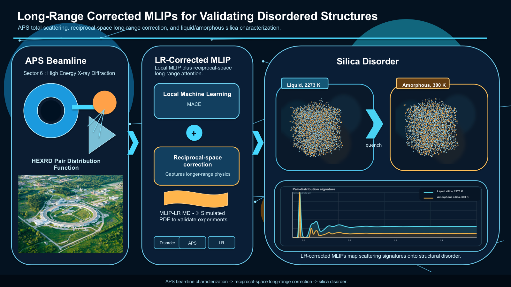

Beamlines · MLIP physics · materials translation
Experiment-grounded atomistic ML for mechanisms and materials discovery.
Algorithms for active learning, lifelong learning, and long-range MLIPs, tested against beamline data and biomedical materials problems.

Our rubric
One algorithmic core, two application feedback loops.
The lab develops methods first: active learning, lifelong learning, and physically motivated corrections for interactions that local models can miss. Beamline collaborations on technologically relevant disordered oxides and layered chalcogenides ground those models in measured scattering signatures and atomistic structure. Biomedical materials collaborations then test how the same validated modeling stack can support practical materials choices.
Active and lifelong learning choose informative calculations and keep models improving as new structures appear.
X-ray and neutron beamline data for disordered oxides and layered chalcogenides check whether simulations match experimental reality.
Validated workflows are adapted with biomedical materials collaborators for discovery problems where atomistic mechanisms matter.
At a Glance
Research
Algorithm development for active/lifelong learning and long-range MLIPs, grounded through beamline-informed oxide and chalcogenide modeling and translated into biomedical materials discovery.
View research areas →Publications
Preprints and selected published works from 2020 onward, with the full record linked through Google Scholar.
Browse outputs →Open Software
Community-facing tools for active learning, molecular machine learning, and long-range interactions.
Explore software →